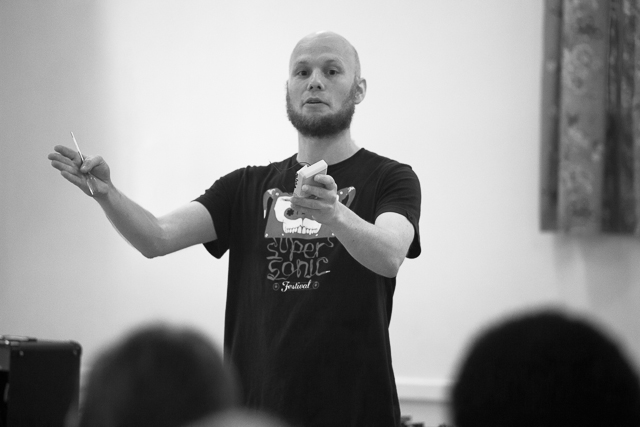
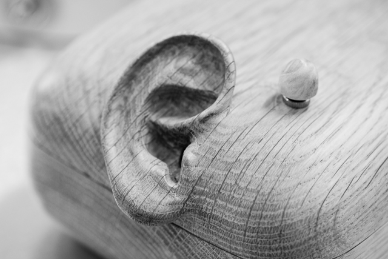
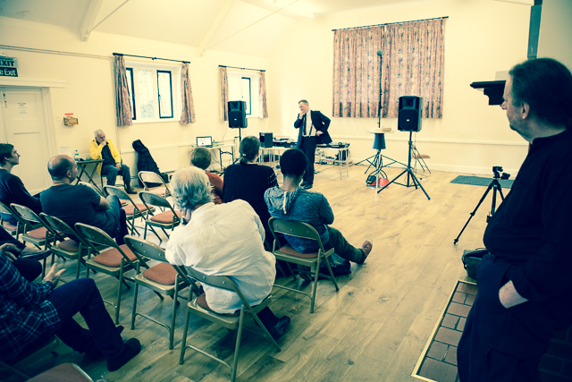
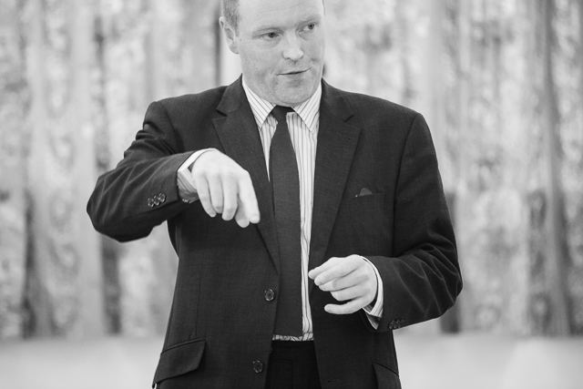
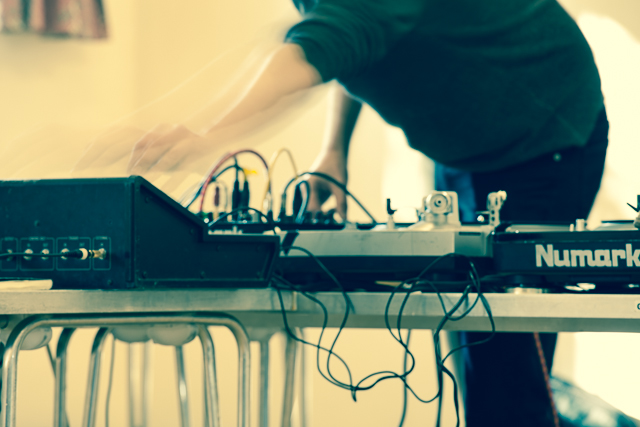
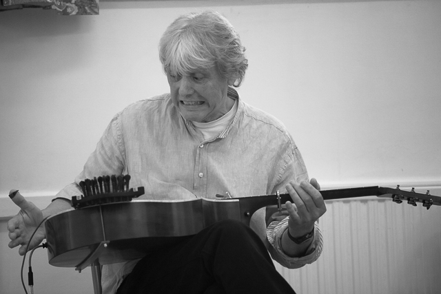

If Wet #6 was an intimate affair but we the presentations were stellar. Thanks to those who came and to those who presented – you did us proud.
Here is the full audio recording, in two parts: Part1 / Part2
Here’s an overview of what went on, so you can access topics of interest:
Welcome

Photo: George Benson
MortonUnderwood present…
[1:30 – 22:05 | Part 1]
“In April of this year I was appointed as the Artist-in-Residence at the Town Hall Symphony Hall in Birmingham, […] because they don’t do weird very well.”

Photo: George Benson
“The police were about to send in a robot […] to blow it up!”
[Sam discussing the first Sonic Graffiti piece to appear in Symphony Hall]

Photo: George Benson
“We didn’t want to put labels saying this is the microphone, this is the record button, this is the loudspeaker; we wanted it to be something you could intuit.”
[David discussing our ‘A Word In Your Ear’ sound art piece]
“This is what happens when Sam and I have a 20 minute phone call about how we might put it in a box and what we might do about the user interface to make it easy to tell which bit to speak into. It’s quite worrying really that it winds up looking like something out of a David Cronenberg movie.”

Soundhog
[22:20 – 1:01:25 | Part 1]
Ben Soundhog introduced his production techniques and work on his piece Whole Lotta Helter Skelter bastard pop piece.

Photo: George Benson
“I’ve always had this kind of fascination with messing up other people’s work, whether they like it or not.”
“I used to have an Atari 800 […] and you could have I think it was 7 seconds in total in samples, which you then split up into eight […] but there was enough there so you could start nicking notes off people’s records. “

Photo: George Benson
“He put out two singles out. They were both under the counter because they were, in terms of copyright, completely illegal.”
“It has gone into the mainstream. I hear stuff now using whacking great big chunks of other peoples music. That is a direct line from what we were doing; it did have an effect. We were always hoping that we’d get involved but of course what happens in the music industry, they take it themselves, they squish it down into something they can deal with and then they make the money out of it – then they are all happy.”

Photo: George Benson
“This is why everybody would use stuff like the Beastie Boys because the vocal tracks were easily available; they were always on the B-side of the 12 inch single. […] But what has happened in recent years […] there were a couple of console games out, one called Rock Band and one called Guitar Hero, […] and this is how much clout the gaming industry developed, they actually were able to go to the record companies dig out the multi-track masters and use them as the basis of the samples in the game.”
“I know a lot of people don’t like you messing with things that are, you know, sacred but […] it’s not like the originals don’t exist any more. If you want to hear it as it is then it’s there for you but if you want just something a bit different then so long as it’s not a complete mess I think you should be able to have a go at this.”

Photo: George Benson
“To be honest I’ve never had much feedback from people but one of the guitar players out of Paul McCartney’s current touring band, which is fantastic, and Jimmy Page’s website had it on their front page, so they must be alright with it.”
soundhog.blogspot.co.uk
Graham Dunning
[00:10 – 53:35 | Part 2]
Graham Dunning discusses and demonstrates his project Music by the Metre.

Photo: George Benson
“It’s based on an idea by Giuseppe Pinot-Gallizio, […] he’s founding member of the situationist movement and Italian painter and also chemist and he came up with industrial painting, Painting by the Metre. […] My version is an audio homage to that technique.”
“I’ve got some machines which create some abstract music which I then use to fill up a spool of tape. […] So what I’ll do is set up the machines until it’s making something resembling something musical and then that’s the end of my intervention with it. […] I just leave it to run, fill up all of one side of the tape and then turn it over and fill up the other side.”

Photo: George Benson
“The idea of vertical music is that it’s always changing but it’s always the same, and it’s never changing but it’s never the same.”
“I am going to set up one of these machines now today and as I go along I am going to describe what the sources are. So, I’ll just start doing that.”

Photo: George Benson
“I am also using a rock from just outside to hold the back end of the tonearm hopefully to make it loop on the same bit so it doesn’t spiral towards the middle.”
“Next up, I’ve got another turntable, which has been slightly butchered. […] I’ve taken out the original motor and have put in this kind of hobby motor, which has an adjustable speed on it. […] It goes from quite slow to being much faster than a normal record player.”
“Just trying to find a certain record. They are all unlabelled so I can’t remember which one it was. […] These are some dubplates that I got made of different field recordings I recorded myself. […] This is the sound of, I put some cymbals out in the rain each with a contact mic on.”
“The longer you listen to it the more you can hear.”

Photo: George Benson
“This microphone is going out the window to get some traffic noise, or in a more academic way of putting it, live environmental sound.”
“There is quite a nice sweep to even regular traffic and I think in the context of quite a noise-heavy conversation between these different sounds it can change the composition. […] Over the course of the tape it’s actually different all the way through.”

Photo: George Benson
“One final element, inside this tape is a loop of cassette. […] This is from a remix I did for a saxophone player called Colin Webster. […] To remix one of his tracks I recorded it out to tape and then made up sixteen of these cassettes of little snippets and then played eight of them together. […] All slightly different, so they go in and out of sync together.”
“So, I am happy with that as the composition as it is going to be. The last bit to do is switch the tape on so, start it running and just leave it recording until it has filled both sides of the tape.”
“That’s it, it’s going and it’s out of my hands!.”
grahamdunning.com
Run What Ya Brung
[54:54 – 01:03:54 | Part 2]
We run a regular feature at If Wet in which members of the audience are invited to bring along and demonstrate instruments, sound objects and sonic oddities. This month we had a great contribution from our regular contributor Richard Windley.
Richard Windley
[54:54 – 01:03:54 | Part 2]
“I’ve got a couple of quite nice handmade guitars that I’ve had for years and I’ve gradually got more and more frustrated with them. […] I thought maybe I’d better design one that I like […] so I designed and built this one a few years ago. […] This thing I’ve only added recently and it was an attempt to do this thing which Indian instruments and some European instruments like hurdy gurdies often have these things called sympathetic strings […] to broaden the range of the sound and to give me more sustain.”

Photo: George Benson
richardwindley.co.uk
________________________________________
This is the first month Pete Ashton was unable to attend If Wet, so we don’t have the usual photographs on his Flickr BUT the wonderful George Benson stepped in to help, so thank you to him for the great photos of If Wet #6 used in this post.
A huge thank you to:
Everyone who presented! Everyone who engaged and provided feedback. Everyone who came. Kavita for cooking, running the bar and tidying up. George for taking photographs.